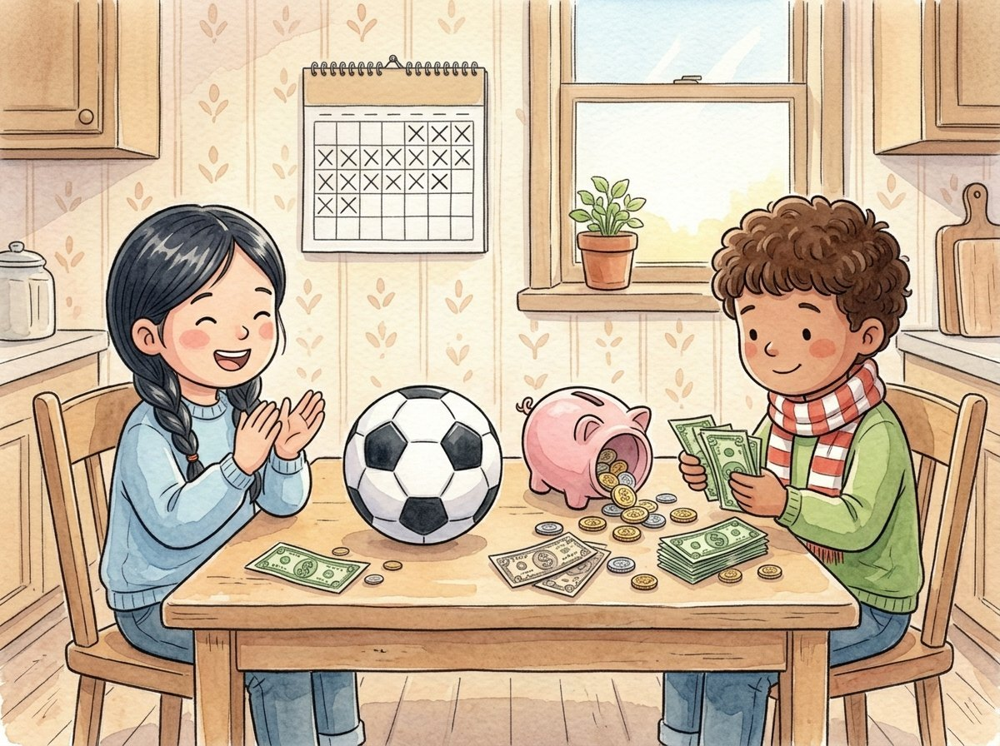

2do grado · Estudios sociales · SS.2.EC.FL.1
La alcancía de Israel
Un cuento sobre guardar dinero para lograr una meta.
Palabras clave que vas a aprender
Toca una palabra verde para ver qué significa.
El cuento
Para su cumpleaños, Israel recibió diez dólares de su abuela. —¡Qué emoción! —dijo, y corrió con Lucía a la tienda de la esquina.
En la tienda había dulces, globos y juguetes pequeños. Israel quería todo su dinero en ese momento. Gastar es usar el dinero para comprar algo.
Entonces vio en la vitrina una pelota de fútbol como la del recreo. Costaba veinte dólares. —No me alcanza —dijo, triste—. Solo tengo diez.
Lucía tuvo una idea. —Puedes —le dijo—. Ahorrar es guardar el dinero ahora para usarlo más adelante. Si guardas tus diez dólares y juntas otros diez, podrás comprar la pelota.
Israel lo pensó un rato. Los dulces eran un : algo que le gustaba, pero que no necesitaba. La pelota también era un deseo, no una necesidad. Ahorrar para comprarla se convirtió en su , es decir, lo que quería lograr. Decidió no gastar.
En casa, Israel guardó su dinero en una , una cajita con una ranura para meter monedas y billetes. Cada semana ayudaba a su mamá a regar las plantas, y guardaba en la alcancía el dólar que ella le daba.
Un día, su mamá le explicó la diferencia entre un deseo y una . —La comida, la ropa y la casa son necesidades: las necesitamos para vivir. Los dulces y los juguetes son deseos.
Después de diez semanas, Israel abrió la alcancía y contó el dinero: ¡veinte dólares! Fue a la tienda y compró la pelota de fútbol. —Valió la pena esperar —dijo. Y al día siguiente la llevó a la escuela, para que hubiera dos pelotas en el recreo.
Glosario
- gastar
- Usar el dinero para comprar algo.
- ahorrar
- Guardar el dinero ahora para usarlo más adelante.
- meta
- Algo que una persona quiere lograr y para lo que se prepara.
- deseo
- Algo que nos gusta tener, pero que no necesitamos para vivir, como los dulces o los juguetes.
- alcancía
- Una cajita o un recipiente con una ranura para guardar monedas y billetes.
- necesidad
- Algo que necesitamos para vivir, como la comida, la ropa o una casa.
Preguntas
Elige la respuesta correcta. Si te equivocas, el cuento te muestra dónde está la respuesta.
-
Pregunta A. ¿Qué es gastar?
Gastar es usar el dinero para comprar algo.
-
Pregunta B. ¿Qué es ahorrar?
Ahorrar es guardar el dinero ahora para usarlo más adelante.
-
Pregunta C. ¿Cuál de estas cosas es una necesidad?
La ropa es una necesidad. Los dulces y los globos son deseos.
-
Pregunta D. ¿Qué hizo Israel cuando juntó veinte dólares?
Israel cumplió su meta: ahorró veinte dólares y compró la pelota de fútbol, un deseo para el que decidió ahorrar.